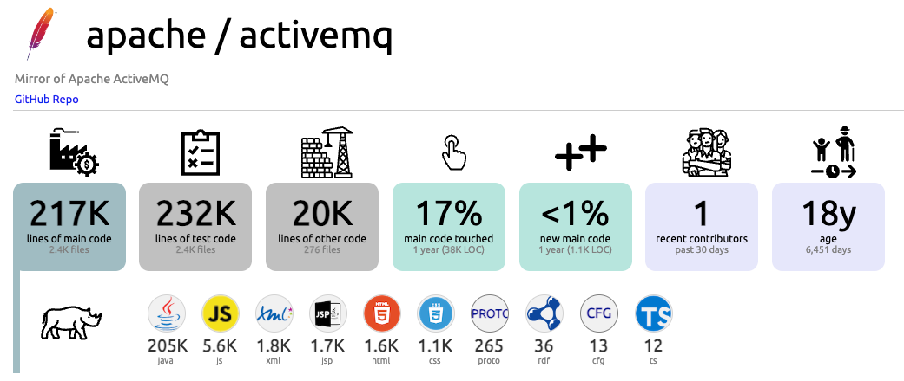
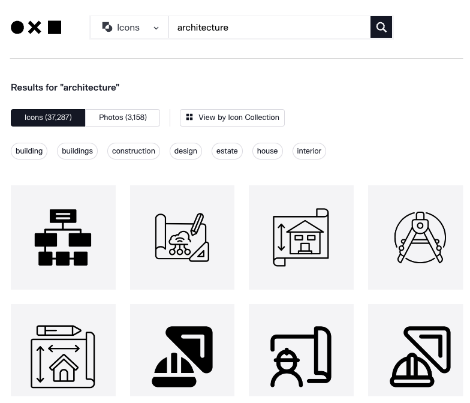
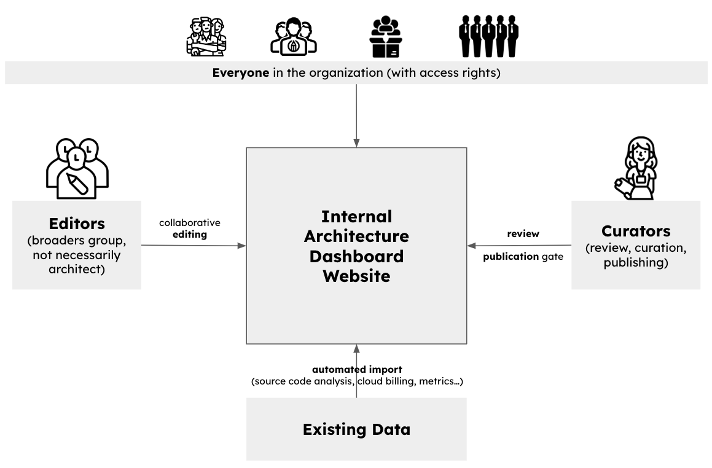
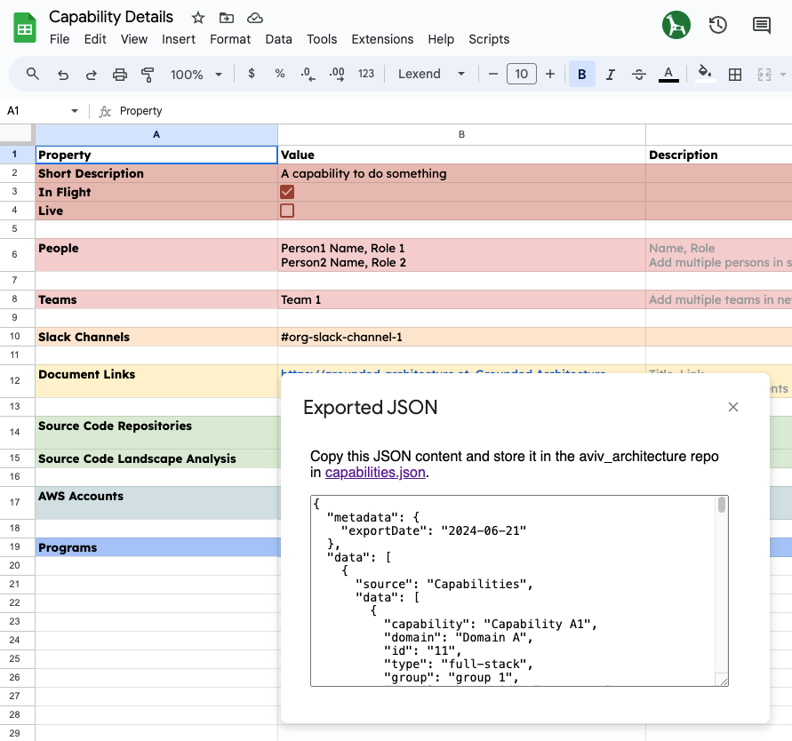
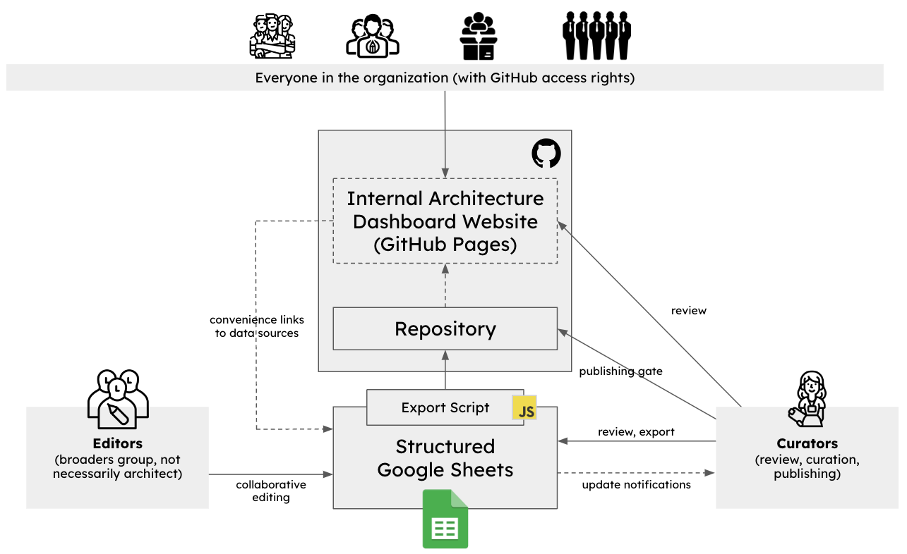
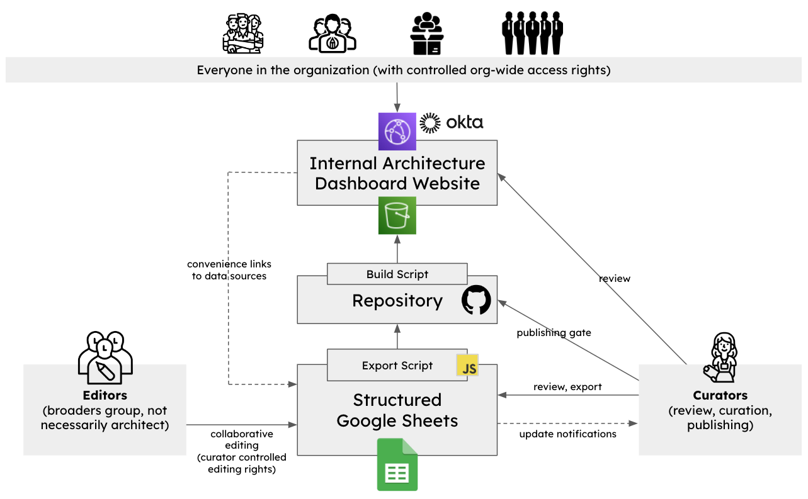

Building Lightweight Architectural Analytics
IN THIS SECTION, YOU WILL: Get practical tips on building lean architecture dashboards and documents using simple, widely available tools.
The ideas in this book are not tied to any specific tool stack, but implementation choices still matter. Over time, I have become increasingly skeptical of heavyweight tooling for architecture dashboards and documentation. In many organizations, those solutions create more maintenance burden than insight.
My preference is to start with the lightest possible implementation that still delivers useful visibility. For Lightweight Architectural Analytics, that often means static HTML, structured JSON, version control, and a few carefully chosen generation scripts rather than a complex application platform.
This section explains why that approach works and which techniques have proven most practical.
Two examples illustrate the point:
- I’ve developed several plain HTML/CSS/DOM templates (with open-source code) that I leverage in my daily work, and you can use for free yourself.
- Sokrates.dev, a tool I developed, generates all reports in plain old HTML without any special libraries. Check out the example of the Apache Foundation source code landscape.
These documents work in any browser, can be hosted on any simple HTTP server, and can be opened directly on a laptop without additional runtime dependencies. Just as importantly, they remain easy to maintain because the implementation stays small.
Implementation Principles
When building these systems, it helps to start with a clear set of principles. Here are the ones I rely on most:
- Leverage Existing Infrastructure: Use what already exists whenever possible. It saves both time and effort.
- Maintainable by a Small Architecture Team: The architecture team rarely has spare capacity to maintain an internal product with heavy technical complexity.
- Broad Access Inside Organization: The documents should be easy for anyone in the organization to open, share, and understand.
Lean Implementation Techniques
The techniques below are the ones I use most often.
Visualization With Plain Old HTML/CSS/DOM
Sometimes the simplest tools are the most practical. Plain HTML, CSS, and the DOM are often enough to build effective visualizations and interactive documents.
I used to rely on heavyweight visualization and UI frameworks for this kind of work. Over time, I found that many useful tools can be built with just the basics, without introducing unnecessary framework complexity.

Figure 1: Simple generated HTML visual of source code analysis results.Embedding JSON in HTML Documents
Most of the documents I create are data-driven. I generate visuals from templates backed by structured data, usually exported as JSON and embedded into an HTML template. That keeps the documents portable and easy to open with minimal setup.
Simple Proven HTML-Based 2D & 3D Visuals
Some simple, proven visual techniques I use regularly are listed below. You can find HTML templates for them here:
- Bar Charts: Classic and practical, perfect for showing comparisons.
- Graphviz: Ideal for easily creating complex graphs and diagrams.
- 3D Node Graph: Add an extra dimension to your data visualization.
- Bubble Chart: Perfect for showing relationships between data points in a visually engaging way.
- Zoomable Circles / Sunbursts: Great for exploring hierarchical data with interactive zoom.
- Treemap: Perfect for visualizing nested data structures in a compact form.
{kind=link}
Icon Libraries
Icons can add clarity and visual emphasis. Resources such as thenounproject.com are useful for finding consistent visual symbols.

Figure 2: A screenshot from thenounproject.com.Version Controlled Lean Documents
I generate documents that are small, lean, and capable of being version-controlled, along with the data used to generate them.
Small and Lean Documents
The documents must be compact, ensuring they do not consume excessive storage space and are suitable for large projects. They are efficient, containing only essential information without unnecessary bloat, which makes them easy to read, understand, and manage.
Version Controlled
I manage these documents using a version control system (VCS) like Git. This system tracks changes over time and allows users to revert to previous versions if needed. It also enables multiple users to work on the same documents simultaneously, providing a clear history of changes, which improves collaboration and reduces conflicting edits.
Together with Data
I also store the data used to generate the documents alongside the documents themselves. This keeps context and output in sync and makes it possible to reproduce any version precisely as it existed at a given moment.
Lean Hosting Techniques
When it comes to hosting static HTML documents, two simple yet crucial requirements are essential:
-
Open Documents on Your Laptop: You can easily open your documents directly on your laptop without needing to install any servers or special frameworks. This ensures accessibility anytime, anywhere—no setup required!
-
Share Across the Organization: Use any simple HTTP server (like GitHub Pages) for straightforward sharing. There is no complex setup; it is just pure, effortless sharing.
Keeping things simple keeps your documents accessible, easy to share, and maintainable. No advanced technical knowledge or elaborate configurations are necessary. So, create your documents, open them anywhere, and share them effortlessly!
Benefits
Lean documents are efficient to generate, easy to store, and fast to process. They provide detailed traceability, enhancing transparency and accountability through a comprehensive history of changes. Consistency is maintained as the context and basis for documents are always available, preventing inconsistencies and errors. Multiple users can efficiently collaborate with clear mechanisms to resolve conflicts and track contributions.
By ensuring all generated documents are small, lean, and version-controlled along with their data, the system maximizes efficiency, consistency, and collaboration while maintaining high traceability and reproducibility.
Collaborative Editing via Google Sheets
To facilitate collaborative editing of data that requires manual changes, I frequently relied on Google Sheets to provide a controlled collaborative editor to a broader audience. By leveraging Google Sheets, multiple users can simultaneously access, edit, and update data in real-time, ensuring that everyone works with the most current information.

Figure 3: A collaborative editing model.I embedded a JavaScript script within the Google Sheet to further streamline this process. This script’s primary function was to export the data into a JSON format, which you can use to generate visual documents using HTML templates.

Figure 4: Exporting Google Sheet data to JSON for document generation.Two Examples Deployments
In recent work, I have used the following two setups to create collaborative, data-driven dashboards.
Simple Setup with GitHub Pages and Google Sheets: Start with a straightforward setup using GitHub Pages for hosting and Google Sheets for data management. This combination is simple, easy to maintain, and broadly accessible. The open-source example is available at the Grounded Architecture resources site.

Figure 5: A simple runtime architecture leveraging GitHub pages and Google Sheets.More Flexible Setup with CDNs, Internal IAM, and Google Sheets: A slightly more advanced setup can add CDNs and internal identity management while preserving the same lightweight principles.

Figure 6: Slightly more flexible runtime architecture leveraging CDNs, internal IAM, and Google Sheets.Final Note
Using the principles and techniques described here, you can create maintainable dashboards and documents that remain easy to build, share, and evolve over time.
Appendix 7: Other Things |
|||
| ← | → | ||